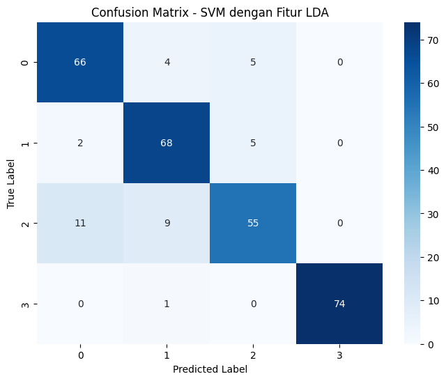
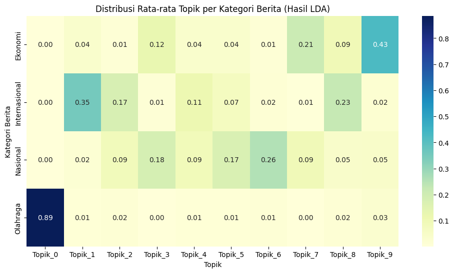
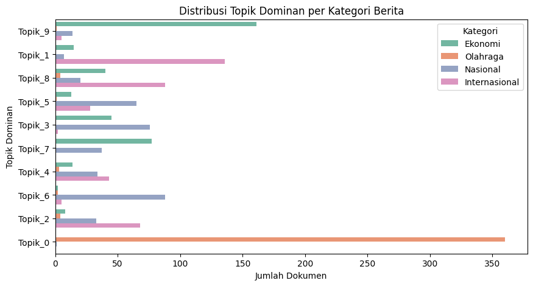
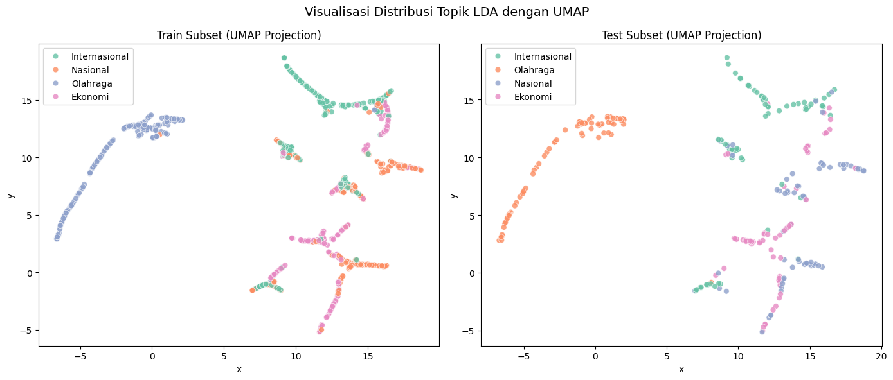
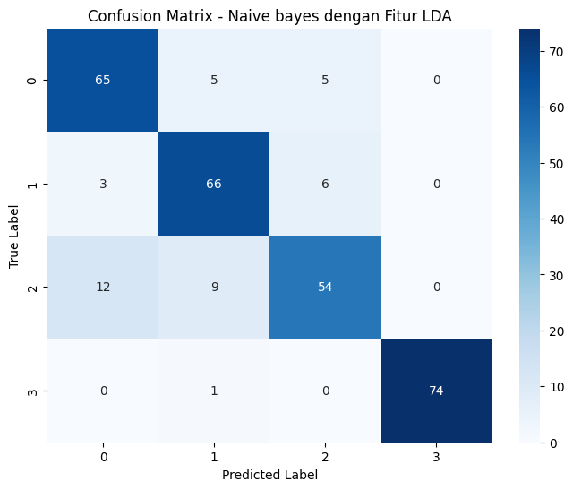
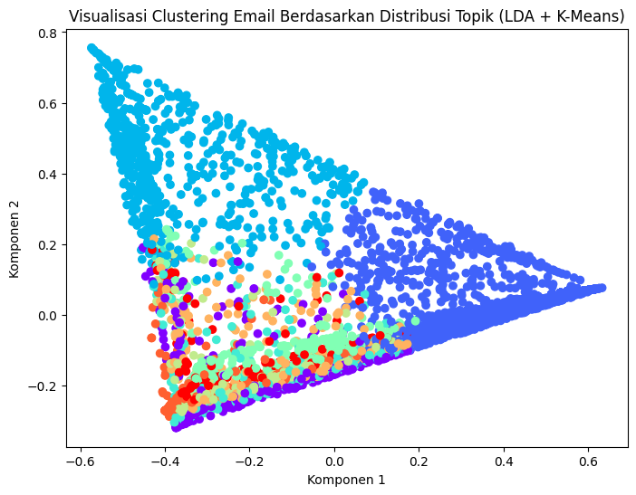

Klasifikasi dengan ektraksi fitur menggunakan Latent Dirichlet Allocation Menggunakan Model Naive bayes dan SVM#
!pip install gensim
^C
Collecting gensim
Downloading gensim-4.4.0-cp310-cp310-win_amd64.whl.metadata (8.6 kB)
Requirement already satisfied: numpy>=1.18.5 in c:\users\fedi arta\appdata\local\programs\python\python310\lib\site-packages (from gensim) (1.26.4)
Requirement already satisfied: scipy>=1.7.0 in c:\users\fedi arta\appdata\local\programs\python\python310\lib\site-packages (from gensim) (1.14.0)
Requirement already satisfied: smart_open>=1.8.1 in c:\users\fedi arta\appdata\local\programs\python\python310\lib\site-packages (from gensim) (7.0.4)
Requirement already satisfied: wrapt in c:\users\fedi arta\appdata\local\programs\python\python310\lib\site-packages (from smart_open>=1.8.1->gensim) (1.16.0)
Downloading gensim-4.4.0-cp310-cp310-win_amd64.whl (24.4 MB)
---------------------------------------- 0.0/24.4 MB ? eta -:--:--
---------------------------------------- 0.0/24.4 MB ? eta -:--:--
---------------------------------------- 0.0/24.4 MB ? eta -:--:--
---------------------------------------- 0.3/24.4 MB ? eta -:--:--
---------------------------------------- 0.3/24.4 MB ? eta -:--:--
---------------------------------------- 0.3/24.4 MB ? eta -:--:--
--------------------------------------- 0.5/24.4 MB 479.2 kB/s eta 0:00:50
--------------------------------------- 0.5/24.4 MB 479.2 kB/s eta 0:00:50
- -------------------------------------- 0.8/24.4 MB 493.2 kB/s eta 0:00:48
- -------------------------------------- 0.8/24.4 MB 493.2 kB/s eta 0:00:48
- -------------------------------------- 1.0/24.4 MB 513.7 kB/s eta 0:00:46
- -------------------------------------- 1.0/24.4 MB 513.7 kB/s eta 0:00:46
- -------------------------------------- 1.0/24.4 MB 513.7 kB/s eta 0:00:46
-- ------------------------------------- 1.3/24.4 MB 504.6 kB/s eta 0:00:46
-- ------------------------------------- 1.3/24.4 MB 504.6 kB/s eta 0:00:46
-- ------------------------------------- 1.3/24.4 MB 504.6 kB/s eta 0:00:46
-- ------------------------------------- 1.6/24.4 MB 482.1 kB/s eta 0:00:48
-- ------------------------------------- 1.6/24.4 MB 482.1 kB/s eta 0:00:48
-- ------------------------------------- 1.6/24.4 MB 482.1 kB/s eta 0:00:48
--- ------------------------------------ 1.8/24.4 MB 481.6 kB/s eta 0:00:47
--- ------------------------------------ 1.8/24.4 MB 481.6 kB/s eta 0:00:47
--- ------------------------------------ 2.1/24.4 MB 493.4 kB/s eta 0:00:46
--- ------------------------------------ 2.1/24.4 MB 493.4 kB/s eta 0:00:46
--- ------------------------------------ 2.4/24.4 MB 495.3 kB/s eta 0:00:45
--- ------------------------------------ 2.4/24.4 MB 495.3 kB/s eta 0:00:45
---- ----------------------------------- 2.6/24.4 MB 496.7 kB/s eta 0:00:44
---- ----------------------------------- 2.6/24.4 MB 496.7 kB/s eta 0:00:44
---- ----------------------------------- 2.6/24.4 MB 496.7 kB/s eta 0:00:44
---- ----------------------------------- 2.9/24.4 MB 499.3 kB/s eta 0:00:44
---- ----------------------------------- 2.9/24.4 MB 499.3 kB/s eta 0:00:44
----- ---------------------------------- 3.1/24.4 MB 494.8 kB/s eta 0:00:43
----- ---------------------------------- 3.1/24.4 MB 494.8 kB/s eta 0:00:43
----- ---------------------------------- 3.1/24.4 MB 494.8 kB/s eta 0:00:43
----- ---------------------------------- 3.1/24.4 MB 494.8 kB/s eta 0:00:43
----- ---------------------------------- 3.4/24.4 MB 477.1 kB/s eta 0:00:44
----- ---------------------------------- 3.4/24.4 MB 477.1 kB/s eta 0:00:44
----- ---------------------------------- 3.4/24.4 MB 477.1 kB/s eta 0:00:44
----- ---------------------------------- 3.4/24.4 MB 477.1 kB/s eta 0:00:44
------ --------------------------------- 3.7/24.4 MB 449.7 kB/s eta 0:00:47
------ --------------------------------- 3.7/24.4 MB 449.7 kB/s eta 0:00:47
------ --------------------------------- 3.7/24.4 MB 449.7 kB/s eta 0:00:47
------ --------------------------------- 3.7/24.4 MB 449.7 kB/s eta 0:00:47
------ --------------------------------- 3.7/24.4 MB 449.7 kB/s eta 0:00:47
------ --------------------------------- 3.9/24.4 MB 427.0 kB/s eta 0:00:48
------ --------------------------------- 3.9/24.4 MB 427.0 kB/s eta 0:00:48
------ --------------------------------- 3.9/24.4 MB 427.0 kB/s eta 0:00:48
------ --------------------------------- 3.9/24.4 MB 427.0 kB/s eta 0:00:48
------ --------------------------------- 4.2/24.4 MB 418.7 kB/s eta 0:00:49
------ --------------------------------- 4.2/24.4 MB 418.7 kB/s eta 0:00:49
------ --------------------------------- 4.2/24.4 MB 418.7 kB/s eta 0:00:49
------- -------------------------------- 4.5/24.4 MB 419.4 kB/s eta 0:00:48
------- -------------------------------- 4.5/24.4 MB 419.4 kB/s eta 0:00:48
------- -------------------------------- 4.5/24.4 MB 419.4 kB/s eta 0:00:48
------- -------------------------------- 4.5/24.4 MB 419.4 kB/s eta 0:00:48
------- -------------------------------- 4.7/24.4 MB 411.0 kB/s eta 0:00:48
------- -------------------------------- 4.7/24.4 MB 411.0 kB/s eta 0:00:48
------- -------------------------------- 4.7/24.4 MB 411.0 kB/s eta 0:00:48
------- -------------------------------- 4.7/24.4 MB 411.0 kB/s eta 0:00:48
------- -------------------------------- 4.7/24.4 MB 411.0 kB/s eta 0:00:48
-------- ------------------------------- 5.0/24.4 MB 397.9 kB/s eta 0:00:49
-------- ------------------------------- 5.0/24.4 MB 397.9 kB/s eta 0:00:49
-------- ------------------------------- 5.0/24.4 MB 397.9 kB/s eta 0:00:49
-------- ------------------------------- 5.0/24.4 MB 397.9 kB/s eta 0:00:49
-------- ------------------------------- 5.2/24.4 MB 393.1 kB/s eta 0:00:49
-------- ------------------------------- 5.2/24.4 MB 393.1 kB/s eta 0:00:49
-------- ------------------------------- 5.2/24.4 MB 393.1 kB/s eta 0:00:49
-------- ------------------------------- 5.2/24.4 MB 393.1 kB/s eta 0:00:49
-------- ------------------------------- 5.2/24.4 MB 393.1 kB/s eta 0:00:49
--------- ------------------------------ 5.5/24.4 MB 381.3 kB/s eta 0:00:50
--------- ------------------------------ 5.5/24.4 MB 381.3 kB/s eta 0:00:50
--------- ------------------------------ 5.5/24.4 MB 381.3 kB/s eta 0:00:50
--------- ------------------------------ 5.8/24.4 MB 381.3 kB/s eta 0:00:49
--------- ------------------------------ 5.8/24.4 MB 381.3 kB/s eta 0:00:49
--------- ------------------------------ 5.8/24.4 MB 381.3 kB/s eta 0:00:49
--------- ------------------------------ 5.8/24.4 MB 381.3 kB/s eta 0:00:49
--------- ------------------------------ 6.0/24.4 MB 380.1 kB/s eta 0:00:49
--------- ------------------------------ 6.0/24.4 MB 380.1 kB/s eta 0:00:49
--------- ------------------------------ 6.0/24.4 MB 380.1 kB/s eta 0:00:49
---------- ----------------------------- 6.3/24.4 MB 380.9 kB/s eta 0:00:48
---------- ----------------------------- 6.3/24.4 MB 380.9 kB/s eta 0:00:48
---------- ----------------------------- 6.6/24.4 MB 384.2 kB/s eta 0:00:47
---------- ----------------------------- 6.6/24.4 MB 384.2 kB/s eta 0:00:47
---------- ----------------------------- 6.6/24.4 MB 384.2 kB/s eta 0:00:47
----------- ---------------------------- 6.8/24.4 MB 386.9 kB/s eta 0:00:46
----------- ---------------------------- 6.8/24.4 MB 386.9 kB/s eta 0:00:46
----------- ---------------------------- 6.8/24.4 MB 386.9 kB/s eta 0:00:46
----------- ---------------------------- 7.1/24.4 MB 389.5 kB/s eta 0:00:45
----------- ---------------------------- 7.1/24.4 MB 389.5 kB/s eta 0:00:45
----------- ---------------------------- 7.1/24.4 MB 389.5 kB/s eta 0:00:45
----------- ---------------------------- 7.1/24.4 MB 389.5 kB/s eta 0:00:45
----------- ---------------------------- 7.1/24.4 MB 389.5 kB/s eta 0:00:45
----------- ---------------------------- 7.1/24.4 MB 389.5 kB/s eta 0:00:45
----------- ---------------------------- 7.1/24.4 MB 389.5 kB/s eta 0:00:45
------------ --------------------------- 7.3/24.4 MB 374.4 kB/s eta 0:00:46
------------ --------------------------- 7.3/24.4 MB 374.4 kB/s eta 0:00:46
------------ --------------------------- 7.3/24.4 MB 374.4 kB/s eta 0:00:46
------------ --------------------------- 7.3/24.4 MB 374.4 kB/s eta 0:00:46
------------ --------------------------- 7.3/24.4 MB 374.4 kB/s eta 0:00:46
------------ --------------------------- 7.3/24.4 MB 374.4 kB/s eta 0:00:46
------------ --------------------------- 7.3/24.4 MB 374.4 kB/s eta 0:00:46
------------ --------------------------- 7.3/24.4 MB 374.4 kB/s eta 0:00:46
------------ --------------------------- 7.6/24.4 MB 356.2 kB/s eta 0:00:48
------------ --------------------------- 7.6/24.4 MB 356.2 kB/s eta 0:00:48
------------ --------------------------- 7.6/24.4 MB 356.2 kB/s eta 0:00:48
------------ --------------------------- 7.6/24.4 MB 356.2 kB/s eta 0:00:48
------------ --------------------------- 7.6/24.4 MB 356.2 kB/s eta 0:00:48
------------ --------------------------- 7.9/24.4 MB 348.3 kB/s eta 0:00:48
------------ --------------------------- 7.9/24.4 MB 348.3 kB/s eta 0:00:48
------------ --------------------------- 7.9/24.4 MB 348.3 kB/s eta 0:00:48
------------ --------------------------- 7.9/24.4 MB 348.3 kB/s eta 0:00:48
------------ --------------------------- 7.9/24.4 MB 348.3 kB/s eta 0:00:48
------------ --------------------------- 7.9/24.4 MB 348.3 kB/s eta 0:00:48
------------- -------------------------- 8.1/24.4 MB 340.5 kB/s eta 0:00:48
------------- -------------------------- 8.1/24.4 MB 340.5 kB/s eta 0:00:48
------------- -------------------------- 8.1/24.4 MB 340.5 kB/s eta 0:00:48
------------- -------------------------- 8.1/24.4 MB 340.5 kB/s eta 0:00:48
------------- -------------------------- 8.1/24.4 MB 340.5 kB/s eta 0:00:48
------------- -------------------------- 8.4/24.4 MB 336.0 kB/s eta 0:00:48
------------- -------------------------- 8.4/24.4 MB 336.0 kB/s eta 0:00:48
!pip install gensim matplotlib seaborn scikit-learn pandas numpy
Requirement already satisfied: gensim in /usr/local/lib/python3.12/dist-packages (4.3.3)
Requirement already satisfied: matplotlib in /usr/local/lib/python3.12/dist-packages (3.10.0)
Requirement already satisfied: seaborn in /usr/local/lib/python3.12/dist-packages (0.13.2)
Requirement already satisfied: scikit-learn in /usr/local/lib/python3.12/dist-packages (1.6.1)
Requirement already satisfied: pandas in /usr/local/lib/python3.12/dist-packages (2.2.2)
Requirement already satisfied: numpy in /usr/local/lib/python3.12/dist-packages (1.26.4)
Requirement already satisfied: scipy<1.14.0,>=1.7.0 in /usr/local/lib/python3.12/dist-packages (from gensim) (1.13.1)
Requirement already satisfied: smart-open>=1.8.1 in /usr/local/lib/python3.12/dist-packages (from gensim) (7.3.1)
Requirement already satisfied: contourpy>=1.0.1 in /usr/local/lib/python3.12/dist-packages (from matplotlib) (1.3.3)
Requirement already satisfied: cycler>=0.10 in /usr/local/lib/python3.12/dist-packages (from matplotlib) (0.12.1)
Requirement already satisfied: fonttools>=4.22.0 in /usr/local/lib/python3.12/dist-packages (from matplotlib) (4.60.1)
Requirement already satisfied: kiwisolver>=1.3.1 in /usr/local/lib/python3.12/dist-packages (from matplotlib) (1.4.9)
Requirement already satisfied: packaging>=20.0 in /usr/local/lib/python3.12/dist-packages (from matplotlib) (25.0)
Requirement already satisfied: pillow>=8 in /usr/local/lib/python3.12/dist-packages (from matplotlib) (11.3.0)
Requirement already satisfied: pyparsing>=2.3.1 in /usr/local/lib/python3.12/dist-packages (from matplotlib) (3.2.5)
Requirement already satisfied: python-dateutil>=2.7 in /usr/local/lib/python3.12/dist-packages (from matplotlib) (2.9.0.post0)
Requirement already satisfied: joblib>=1.2.0 in /usr/local/lib/python3.12/dist-packages (from scikit-learn) (1.5.2)
Requirement already satisfied: threadpoolctl>=3.1.0 in /usr/local/lib/python3.12/dist-packages (from scikit-learn) (3.6.0)
Requirement already satisfied: pytz>=2020.1 in /usr/local/lib/python3.12/dist-packages (from pandas) (2025.2)
Requirement already satisfied: tzdata>=2022.7 in /usr/local/lib/python3.12/dist-packages (from pandas) (2025.2)
Requirement already satisfied: six>=1.5 in /usr/local/lib/python3.12/dist-packages (from python-dateutil>=2.7->matplotlib) (1.17.0)
Requirement already satisfied: wrapt in /usr/local/lib/python3.12/dist-packages (from smart-open>=1.8.1->gensim) (1.17.3)
!pip install umap-learn
Requirement already satisfied: umap-learn in /usr/local/lib/python3.12/dist-packages (0.5.9.post2)
Requirement already satisfied: numpy>=1.23 in /usr/local/lib/python3.12/dist-packages (from umap-learn) (1.26.4)
Requirement already satisfied: scipy>=1.3.1 in /usr/local/lib/python3.12/dist-packages (from umap-learn) (1.13.1)
Requirement already satisfied: scikit-learn>=1.6 in /usr/local/lib/python3.12/dist-packages (from umap-learn) (1.6.1)
Requirement already satisfied: numba>=0.51.2 in /usr/local/lib/python3.12/dist-packages (from umap-learn) (0.60.0)
Requirement already satisfied: pynndescent>=0.5 in /usr/local/lib/python3.12/dist-packages (from umap-learn) (0.5.13)
Requirement already satisfied: tqdm in /usr/local/lib/python3.12/dist-packages (from umap-learn) (4.67.1)
Requirement already satisfied: llvmlite<0.44,>=0.43.0dev0 in /usr/local/lib/python3.12/dist-packages (from numba>=0.51.2->umap-learn) (0.43.0)
Requirement already satisfied: joblib>=0.11 in /usr/local/lib/python3.12/dist-packages (from pynndescent>=0.5->umap-learn) (1.5.2)
Requirement already satisfied: threadpoolctl>=3.1.0 in /usr/local/lib/python3.12/dist-packages (from scikit-learn>=1.6->umap-learn) (3.6.0)
import pandas as pd
import numpy as np
import gensim
from gensim import corpora, models
from gensim.models.ldamodel import LdaModel
from sklearn.model_selection import train_test_split
from sklearn.svm import SVC
from sklearn.metrics import accuracy_score, classification_report, confusion_matrix
import matplotlib.pyplot as plt
import seaborn as sns
from google.colab import drive
drive.mount('/content/drive')
Mounted at /content/drive
# Baca data
df_path = "/content/drive/MyDrive/Uts_ppw/Berita.csv"
df = pd.read_csv(df_path)
# Cek kolom
df.head()
| No | judul | berita | tanggal | kategori | link | |
|---|---|---|---|---|---|---|
| 0 | 1 | Airlangga Harap Kenaikan UMP Tingkatkan Daya B... | Menteri Koordinator (Menko) Bidang Perekonomia... | Minggu, 01 Des 2024 23:40 WIB | Ekonomi | https://www.cnnindonesia.com/ekonomi/202412012... |
| 1 | 2 | PT SIER Beri Penghargaan untuk 50 Tenant Terba... | Dalam rangka memeriahkan hari jadi ke-50, PT S... | Minggu, 01 Des 2024 20:45 WIB | Ekonomi | https://www.cnnindonesia.com/ekonomi/202412012... |
| 2 | 3 | Prabowo Bakal Bentuk Kementerian Penerimaan Ne... | Wacana Presiden Prabowo Subianto akan membentu... | Minggu, 01 Des 2024 19:40 WIB | Ekonomi | https://www.cnnindonesia.com/ekonomi/202412011... |
| 3 | 4 | Sinergi Kemenag & BPJS Ketenagakerjaan Lindung... | BPJS Ketenagakerjaan dan Kementerian Agama (Ke... | Minggu, 01 Des 2024 19:03 WIB | Ekonomi | https://www.cnnindonesia.com/ekonomi/202412011... |
| 4 | 5 | Pemerintah Segera Bentuk Satgas PHK Usai Tetap... | Pemerintah akan segera membentuk Satuan Tugas ... | Minggu, 01 Des 2024 19:00 WIB | Ekonomi | https://www.cnnindonesia.com/ekonomi/202412011... |
# Melihat daftar kategori unik
print(df['kategori'].unique())
# Menghitung jumlah kategori unik
print("Jumlah kategori:", df['kategori'].nunique())
# Kalau mau lihat jumlah data per kategori
print(df['kategori'].value_counts())
['Ekonomi' 'Olahraga' 'Nasional' 'Internasional']
Jumlah kategori: 4
kategori
Ekonomi 375
Olahraga 375
Nasional 375
Internasional 375
Name: count, dtype: int64
# Cek jumlah NaN di tiap kolom
print(df.isna().sum())
No 0
judul 0
berita 0
tanggal 0
kategori 0
link 0
dtype: int64
# Hapus baris yang abstrak_en kosong
data = df.dropna(subset=['berita']).reset_index(drop=True)
# Cek lagi apakah masih ada yang kosong
print(data['berita'].isna().sum())
0
data
| No | judul | berita | tanggal | kategori | link | |
|---|---|---|---|---|---|---|
| 0 | 1 | Airlangga Harap Kenaikan UMP Tingkatkan Daya B... | Menteri Koordinator (Menko) Bidang Perekonomia... | Minggu, 01 Des 2024 23:40 WIB | Ekonomi | https://www.cnnindonesia.com/ekonomi/202412012... |
| 1 | 2 | PT SIER Beri Penghargaan untuk 50 Tenant Terba... | Dalam rangka memeriahkan hari jadi ke-50, PT S... | Minggu, 01 Des 2024 20:45 WIB | Ekonomi | https://www.cnnindonesia.com/ekonomi/202412012... |
| 2 | 3 | Prabowo Bakal Bentuk Kementerian Penerimaan Ne... | Wacana Presiden Prabowo Subianto akan membentu... | Minggu, 01 Des 2024 19:40 WIB | Ekonomi | https://www.cnnindonesia.com/ekonomi/202412011... |
| 3 | 4 | Sinergi Kemenag & BPJS Ketenagakerjaan Lindung... | BPJS Ketenagakerjaan dan Kementerian Agama (Ke... | Minggu, 01 Des 2024 19:03 WIB | Ekonomi | https://www.cnnindonesia.com/ekonomi/202412011... |
| 4 | 5 | Pemerintah Segera Bentuk Satgas PHK Usai Tetap... | Pemerintah akan segera membentuk Satuan Tugas ... | Minggu, 01 Des 2024 19:00 WIB | Ekonomi | https://www.cnnindonesia.com/ekonomi/202412011... |
| ... | ... | ... | ... | ... | ... | ... |
| 1495 | 1496 | Laporan Sebab Tabrakan Pesawat-Black Hawk Dita... | Anggota Dewan Keselamatan Transportasi Nasiona... | Jumat, 31 Jan 2025 04:40 WIB | Internasional | https://www.cnnindonesia.com/internasional/202... |
| 1496 | 1497 | Israel Bebaskan 110 Sandera Palestina, Diantar... | Israel telah membebaskan 110 tahanan Palestina... | Jumat, 31 Jan 2025 03:01 WIB | Internasional | https://www.cnnindonesia.com/internasional/202... |
| 1497 | 1498 | Hamas Konfirmasi Kematian Komandan Al Qassam M... | Hamas mengonfirmasi kematian kepala militernya... | Jumat, 31 Jan 2025 02:30 WIB | Internasional | https://www.cnnindonesia.com/internasional/202... |
| 1498 | 1499 | Black Box American Airlines Ditemukan Usai Tab... | Tim penyelam diduga menemukan satu dari dua bl... | Jumat, 31 Jan 2025 01:00 WIB | Internasional | https://www.cnnindonesia.com/internasional/202... |
| 1499 | 1500 | Trump Salahkan Biden soal Penurunan Standar Ke... | Presiden AS Donald Trump menyalahkan pemerinta... | Jumat, 31 Jan 2025 00:40 WIB | Internasional | https://www.cnnindonesia.com/internasional/202... |
1500 rows × 6 columns
#Cleaning data
import pandas as pd
import re
# Fungsi cleansing
def cleansing(text):
text = str(text).lower() # ubah ke huruf kecil
text = re.sub(r'[^a-zA-Z\s]', ' ', text) # hilangkan angka/simbol
text = re.sub(r'\s+', ' ', text).strip() # hilangkan spasi berlebih
return text
# Terapkan cleansing
data['cleaned'] = data['berita'].apply(cleansing)
# Simpan ke CSV
data.to_csv('/content/drive/MyDrive/Uts_ppw/isi_berita_cleaned.csv', index=False)
print("Data berhasil disimpan ke CSV!\n")
# Tampilkan beberapa baris pertama
data[['berita','cleaned']].head()
Data berhasil disimpan ke CSV!
| berita | cleaned | |
|---|---|---|
| 0 | Menteri Koordinator (Menko) Bidang Perekonomia... | menteri koordinator menko bidang perekonomian ... |
| 1 | Dalam rangka memeriahkan hari jadi ke-50, PT S... | dalam rangka memeriahkan hari jadi ke pt surab... |
| 2 | Wacana Presiden Prabowo Subianto akan membentu... | wacana presiden prabowo subianto akan membentu... |
| 3 | BPJS Ketenagakerjaan dan Kementerian Agama (Ke... | bpjs ketenagakerjaan dan kementerian agama kem... |
| 4 | Pemerintah akan segera membentuk Satuan Tugas ... | pemerintah akan segera membentuk satuan tugas ... |
!pip install pyspellchecker
Collecting pyspellchecker
Downloading pyspellchecker-0.8.3-py3-none-any.whl.metadata (9.5 kB)
Downloading pyspellchecker-0.8.3-py3-none-any.whl (7.2 MB)
━━━━━━━━━━━━━━━━━━━━━━━━━━━━━━━━━━━━━━━━ 7.2/7.2 MB 43.4 MB/s eta 0:00:00
?25hInstalling collected packages: pyspellchecker
Successfully installed pyspellchecker-0.8.3
#Stopword
!pip install Sastrawi
Collecting Sastrawi
Downloading Sastrawi-1.0.1-py2.py3-none-any.whl.metadata (909 bytes)
Downloading Sastrawi-1.0.1-py2.py3-none-any.whl (209 kB)
?25l ━━━━━━━━━━━━━━━━━━━━━━━━━━━━━━━━━━━━━━━━ 0.0/209.7 kB ? eta -:--:--
━━━━━━━━━━━━━━━━━━━━━━━━━━━━━━━━━━━━━━━╺ 204.8/209.7 kB 8.2 MB/s eta 0:00:01
━━━━━━━━━━━━━━━━━━━━━━━━━━━━━━━━━━━━━━━━ 209.7/209.7 kB 4.1 MB/s eta 0:00:00
?25hInstalling collected packages: Sastrawi
Successfully installed Sastrawi-1.0.1
import pandas as pd
from Sastrawi.StopWordRemover.StopWordRemoverFactory import StopWordRemoverFactory
# Buat stopword remover
factory = StopWordRemoverFactory()
stopword = factory.create_stop_word_remover()
# Terapkan stopword removal pada kolom 'cleaned'
data['no_stopwords'] = data['cleaned'].apply(stopword.remove)
# Simpan hasil ke CSV
data.to_csv('/content/drive/MyDrive/Uts_ppw/berita_cnn_no_stopwords.csv', index=False)
print("Data berhasil disimpan ke CSV!\n")
# Tampilkan beberapa baris pertama
data[['cleaned','no_stopwords']].head()
Data berhasil disimpan ke CSV!
| cleaned | no_stopwords | |
|---|---|---|
| 0 | menteri koordinator menko bidang perekonomian ... | menteri koordinator menko bidang perekonomian ... |
| 1 | dalam rangka memeriahkan hari jadi ke pt surab... | rangka memeriahkan hari jadi pt surabaya indus... |
| 2 | wacana presiden prabowo subianto akan membentu... | wacana presiden prabowo subianto membentuk mem... |
| 3 | bpjs ketenagakerjaan dan kementerian agama kem... | bpjs ketenagakerjaan kementerian agama kemenag... |
| 4 | pemerintah akan segera membentuk satuan tugas ... | pemerintah segera membentuk satuan tugas pemut... |
#Stemming
import pandas as pd
from Sastrawi.Stemmer.StemmerFactory import StemmerFactory
# Buat stemmer
stemmer = StemmerFactory().create_stemmer()
# Terapkan stemming pada kolom 'no_stopwords'
data['stemmed'] = data['no_stopwords'].apply(stemmer.stem)
# Simpan hasil ke CSV
data.to_csv('/content/drive/MyDrive/Uts_ppw/berita_cnn_stemmed.csv', index=False)
print("Data berhasil disimpan ke CSV!\n")
# Tampilkan beberapa baris pertama
data[['no_stopwords','stemmed']].head()
Data berhasil disimpan ke CSV!
| no_stopwords | stemmed | |
|---|---|---|
| 0 | menteri koordinator menko bidang perekonomian ... | menteri koordinator menko bidang ekonomi airla... |
| 1 | rangka memeriahkan hari jadi pt surabaya indus... | rangka riah hari jadi pt surabaya industrial e... |
| 2 | wacana presiden prabowo subianto membentuk mem... | wacana presiden prabowo subianto bentuk bentuk... |
| 3 | bpjs ketenagakerjaan kementerian agama kemenag... | bpjs ketenagakerjaan menteri agama kemenag ber... |
| 4 | pemerintah segera membentuk satuan tugas pemut... | perintah segera bentuk satu tugas putus hubung... |
Tokenisasi#
import pandas as pd
# Fungsi tokenisasi sederhana
def tokenize(text):
return text.split()
# Terapkan tokenisasi pada kolom 'stemmed'
data['tokens'] = data['stemmed'].apply(tokenize)
# Simpan hasil ke CSV
data.to_csv('/content/drive/MyDrive/Uts_ppw/berita_cnn_tokens.csv', index=False)
print("Data berhasil disimpan ke CSV!\n")
# Tampilkan beberapa baris pertama
data[['stemmed','tokens']].head()
Data berhasil disimpan ke CSV!
| stemmed | tokens | |
|---|---|---|
| 0 | menteri koordinator menko bidang ekonomi airla... | [menteri, koordinator, menko, bidang, ekonomi,... |
| 1 | rangka riah hari jadi pt surabaya industrial e... | [rangka, riah, hari, jadi, pt, surabaya, indus... |
| 2 | wacana presiden prabowo subianto bentuk bentuk... | [wacana, presiden, prabowo, subianto, bentuk, ... |
| 3 | bpjs ketenagakerjaan menteri agama kemenag ber... | [bpjs, ketenagakerjaan, menteri, agama, kemena... |
| 4 | perintah segera bentuk satu tugas putus hubung... | [perintah, segera, bentuk, satu, tugas, putus,... |
# Baca data
df_path1 = "/content/drive/MyDrive/Uts_ppw/berita_cnn_tokens.csv"
df_berita = pd.read_csv(df_path1)
# Cek kolom
df_berita.head()
| No | judul | berita | tanggal | kategori | link | cleaned | no_stopwords | stemmed | tokens | |
|---|---|---|---|---|---|---|---|---|---|---|
| 0 | 1 | Airlangga Harap Kenaikan UMP Tingkatkan Daya B... | Menteri Koordinator (Menko) Bidang Perekonomia... | Minggu, 01 Des 2024 23:40 WIB | Ekonomi | https://www.cnnindonesia.com/ekonomi/202412012... | menteri koordinator menko bidang perekonomian ... | menteri koordinator menko bidang perekonomian ... | menteri koordinator menko bidang ekonomi airla... | ['menteri', 'koordinator', 'menko', 'bidang', ... |
| 1 | 2 | PT SIER Beri Penghargaan untuk 50 Tenant Terba... | Dalam rangka memeriahkan hari jadi ke-50, PT S... | Minggu, 01 Des 2024 20:45 WIB | Ekonomi | https://www.cnnindonesia.com/ekonomi/202412012... | dalam rangka memeriahkan hari jadi ke pt surab... | rangka memeriahkan hari jadi pt surabaya indus... | rangka riah hari jadi pt surabaya industrial e... | ['rangka', 'riah', 'hari', 'jadi', 'pt', 'sura... |
| 2 | 3 | Prabowo Bakal Bentuk Kementerian Penerimaan Ne... | Wacana Presiden Prabowo Subianto akan membentu... | Minggu, 01 Des 2024 19:40 WIB | Ekonomi | https://www.cnnindonesia.com/ekonomi/202412011... | wacana presiden prabowo subianto akan membentu... | wacana presiden prabowo subianto membentuk mem... | wacana presiden prabowo subianto bentuk bentuk... | ['wacana', 'presiden', 'prabowo', 'subianto', ... |
| 3 | 4 | Sinergi Kemenag & BPJS Ketenagakerjaan Lindung... | BPJS Ketenagakerjaan dan Kementerian Agama (Ke... | Minggu, 01 Des 2024 19:03 WIB | Ekonomi | https://www.cnnindonesia.com/ekonomi/202412011... | bpjs ketenagakerjaan dan kementerian agama kem... | bpjs ketenagakerjaan kementerian agama kemenag... | bpjs ketenagakerjaan menteri agama kemenag ber... | ['bpjs', 'ketenagakerjaan', 'menteri', 'agama'... |
| 4 | 5 | Pemerintah Segera Bentuk Satgas PHK Usai Tetap... | Pemerintah akan segera membentuk Satuan Tugas ... | Minggu, 01 Des 2024 19:00 WIB | Ekonomi | https://www.cnnindonesia.com/ekonomi/202412011... | pemerintah akan segera membentuk satuan tugas ... | pemerintah segera membentuk satuan tugas pemut... | perintah segera bentuk satu tugas putus hubung... | ['perintah', 'segera', 'bentuk', 'satu', 'tuga... |
df_berita[['kategori', 'stemmed']].head()
| kategori | stemmed | |
|---|---|---|
| 0 | Ekonomi | menteri koordinator menko bidang ekonomi airla... |
| 1 | Ekonomi | rangka riah hari jadi pt surabaya industrial e... |
| 2 | Ekonomi | wacana presiden prabowo subianto bentuk bentuk... |
| 3 | Ekonomi | bpjs ketenagakerjaan menteri agama kemenag ber... |
| 4 | Ekonomi | perintah segera bentuk satu tugas putus hubung... |
# Melihat daftar kategori unik
print(df_berita['kategori'].unique())
# Menghitung jumlah kategori unik
print("Jumlah kategori:", df['kategori'].nunique())
# Kalau mau lihat jumlah data per kategori
print(df_berita['kategori'].value_counts())
['Ekonomi' 'Olahraga' 'Nasional' 'Internasional']
Jumlah kategori: 4
kategori
Ekonomi 375
Olahraga 375
Nasional 375
Internasional 375
Name: count, dtype: int64
Siapkan data untuk LDA#
# Ubah string list token menjadi list Python
import ast
df_berita['tokens'] = df_berita['tokens'].apply(lambda x: ast.literal_eval(x) if isinstance(x, str) else x)
# Buat kamus (dictionary) dan corpus untuk Gensim
dictionary = corpora.Dictionary(df_berita['tokens'])
corpus = [dictionary.doc2bow(text) for text in df_berita['tokens']]
print("Jumlah dokumen:", len(corpus))
print("Jumlah kata unik:", len(dictionary))
Jumlah dokumen: 1500
Jumlah kata unik: 18463
Training Model LDA#
# Tentukan jumlah topik (bisa kamu sesuaikan)
num_topics = 10
lda_model = LdaModel(
corpus=corpus,
id2word=dictionary,
num_topics=num_topics,
random_state=42,
passes=10,
alpha='auto'
)
for i, topic in lda_model.show_topics(num_topics=num_topics, num_words=10, formatted=False):
print(f"\nTopik {i+1}:")
print(", ".join([word for word, prob in topic]))
Topik 1:
indonesia, main, timnas, piala, jadi, latih, gol, menit, menang, laga
Topik 2:
israel, senjata, gaza, gencat, bakar, hamas, kata, palestina, sebut, orang
Topik 3:
orang, kata, jadi, sebut, suriah, banjir, al, air, warga, pesawat
Topik 4:
program, kata, makan, gizi, jalan, jadi, jakarta, gratis, mbg, anak
Topik 5:
yoon, presiden, kpk, kata, sebut, korupsi, militer, negara, darurat, makzul
Topik 6:
sebut, kata, prabowo, presiden, jadi, negara, kerja, laku, undang, perintah
Topik 7:
laku, duga, sebut, kasus, kata, hasto, kpk, korban, sangka, periksa
Topik 8:
laut, pagar, sebut, kata, menteri, tangerang, ada, milik, nelayan, bangun
Topik 9:
kata, negara, jadi, sebut, indonesia, as, trump, menteri, presiden, rusia
Topik 10:
rp, persen, jadi, tahun, indonesia, menteri, harga, kata, besar, perintah
Ubah hasil LDA menjadi fitur numerik#
def get_topic_distribution(lda_model, corpus):
topic_features = []
for doc in corpus:
topic_dist = [0] * lda_model.num_topics
for topic_num, prob in lda_model.get_document_topics(doc):
topic_dist[topic_num] = prob
topic_features.append(topic_dist)
return np.array(topic_features)
X_lda = get_topic_distribution(lda_model, corpus)
y = df_berita['kategori']
print("Ekstraksi fitur LDA selesai.")
X_lda.shape
Ekstraksi fitur LDA selesai.
(1500, 10)
# Gabungkan hasil LDA dengan kategori berita
df_lda = pd.DataFrame(X_lda, columns=[f"Topik_{i+1}" for i in range(X_lda.shape[1])])
df_lda['kategori'] = df_berita['kategori'].values
# Lihat 5 baris pertama
df_lda.head()
| Topik_1 | Topik_2 | Topik_3 | Topik_4 | Topik_5 | Topik_6 | Topik_7 | Topik_8 | Topik_9 | Topik_10 | kategori | |
|---|---|---|---|---|---|---|---|---|---|---|---|
| 0 | 0.0 | 0.000000 | 0.0 | 0.000000 | 0.191518 | 0.000000 | 0.0 | 0.0 | 0.000000 | 0.807348 | Ekonomi |
| 1 | 0.0 | 0.444268 | 0.0 | 0.298156 | 0.000000 | 0.000000 | 0.0 | 0.0 | 0.000000 | 0.247429 | Ekonomi |
| 2 | 0.0 | 0.000000 | 0.0 | 0.000000 | 0.000000 | 0.080748 | 0.0 | 0.0 | 0.507695 | 0.410428 | Ekonomi |
| 3 | 0.0 | 0.000000 | 0.0 | 0.000000 | 0.000000 | 0.938369 | 0.0 | 0.0 | 0.000000 | 0.059917 | Ekonomi |
| 4 | 0.0 | 0.000000 | 0.0 | 0.000000 | 0.467736 | 0.000000 | 0.0 | 0.0 | 0.022657 | 0.508351 | Ekonomi |
Bagi Data Train dan Test#
X_train, X_test, y_train, y_test = train_test_split(
X_lda, y, test_size=0.2, random_state=42, stratify=y
)
print(f"Jumlah data latih: {len(X_train)}, data uji: {len(X_test)}")
Jumlah data latih: 1200, data uji: 300
Klasifikasi SVM#
svm_model = SVC(kernel='linear', C=1, random_state=42)
svm_model.fit(X_train, y_train)
print("Model SVM berhasil dilatih dengan fitur hasil ekstraksi LDA.")
Model SVM berhasil dilatih dengan fitur hasil ekstraksi LDA.
Evaluasi Model#
y_pred = svm_model.predict(X_test)
print("Akurasi Model:", accuracy_score(y_test, y_pred))
print("\nLaporan Klasifikasi:\n", classification_report(y_test, y_pred))
Akurasi Model: 0.8766666666666667
Laporan Klasifikasi:
precision recall f1-score support
Ekonomi 0.84 0.88 0.86 75
Internasional 0.83 0.91 0.87 75
Nasional 0.85 0.73 0.79 75
Olahraga 1.00 0.99 0.99 75
accuracy 0.88 300
macro avg 0.88 0.88 0.88 300
weighted avg 0.88 0.88 0.88 300
Visualisasi Confusion Matrix#
plt.figure(figsize=(8,6))
sns.heatmap(confusion_matrix(y_test, y_pred), annot=True, fmt='d', cmap='Blues')
plt.title('Confusion Matrix - SVM dengan Fitur LDA')
plt.xlabel('Predicted Label')
plt.ylabel('True Label')
plt.show()

Distribusi Topik per Kategori#
topic_df = pd.DataFrame(X_lda, columns=[f"Topik_{i}" for i in range(num_topics)])
topic_df["Kategori"] = y.values
topic_by_category = topic_df.groupby("Kategori").mean()
plt.figure(figsize=(12,6))
sns.heatmap(topic_by_category, cmap="YlGnBu", annot=True, fmt=".2f")
plt.title("Distribusi Rata-rata Topik per Kategori Berita (Hasil LDA)")
plt.xlabel("Topik")
plt.ylabel("Kategori Berita")
plt.show()

Topik Dominan per Dokumen#
topic_df["Topik_Dominan"] = topic_df[[f"Topik_{i}" for i in range(num_topics)]].idxmax(axis=1)
plt.figure(figsize=(10,5))
sns.countplot(y="Topik_Dominan", hue="Kategori", data=topic_df, palette="Set2")
plt.title("Distribusi Topik Dominan per Kategori Berita")
plt.xlabel("Jumlah Dokumen")
plt.ylabel("Topik Dominan")
plt.legend(title="Kategori")
plt.show()

Proyeksi 2D Data LDA#
import umap
# Buat model UMAP
umap_model = umap.UMAP(n_neighbors=15, n_components=2, random_state=42)
# Fit-transform untuk data training dan test
X_train_2d = umap_model.fit_transform(X_train)
X_test_2d = umap_model.transform(X_test)
# Simpan hasil proyeksi ke DataFrame
train_umap = pd.DataFrame(X_train_2d, columns=['x', 'y'])
train_umap['Kategori'] = y_train.values
test_umap = pd.DataFrame(X_test_2d, columns=['x', 'y'])
test_umap['Kategori'] = y_test.values
/usr/local/lib/python3.12/dist-packages/umap/umap_.py:1952: UserWarning: n_jobs value 1 overridden to 1 by setting random_state. Use no seed for parallelism.
warn(
Visualisasi#
plt.figure(figsize=(14,6))
# Plot subset training
plt.subplot(1, 2, 1)
sns.scatterplot(
data=train_umap,
x='x', y='y',
hue='Kategori',
palette='Set2',
s=40,
alpha=0.8
)
plt.title('Train Subset (UMAP Projection)')
plt.legend(loc='best')
# Plot subset testing
plt.subplot(1, 2, 2)
sns.scatterplot(
data=test_umap,
x='x', y='y',
hue='Kategori',
palette='Set2',
s=40,
alpha=0.8
)
plt.title('Test Subset (UMAP Projection)')
plt.legend(loc='best')
plt.suptitle('Visualisasi Distribusi Topik LDA dengan UMAP', fontsize=14)
plt.tight_layout()
plt.show()

#Klasifikasi Naive bayes
from sklearn.naive_bayes import MultinomialNB
nb_model = MultinomialNB()
nb_model.fit(X_train, y_train)
y_pred_nb = nb_model.predict(X_test)
from sklearn.metrics import accuracy_score, classification_report, confusion_matrix
print("Accuracy (Naive Bayes):", accuracy_score(y_test, y_pred_nb))
print(classification_report(y_test, y_pred_nb))
Accuracy (Naive Bayes): 0.8633333333333333
precision recall f1-score support
Ekonomi 0.81 0.87 0.84 75
Internasional 0.81 0.88 0.85 75
Nasional 0.83 0.72 0.77 75
Olahraga 1.00 0.99 0.99 75
accuracy 0.86 300
macro avg 0.86 0.86 0.86 300
weighted avg 0.86 0.86 0.86 300
plt.figure(figsize=(8,6))
sns.heatmap(confusion_matrix(y_test, y_pred_nb), annot=True, fmt='d', cmap='Blues')
plt.title('Confusion Matrix - Naive bayes dengan Fitur LDA')
plt.xlabel('Predicted Label')
plt.ylabel('True Label')
plt.show()

Clustering Email#
# Baca data
df_path_email = "/content/drive/MyDrive/Uts_ppw/spam.csv"
df_email = pd.read_csv(df_path_email, encoding='windows-1252')
# Cek kolom
df_email.head()
| id | Text | Unnamed: 2 | Unnamed: 3 | Unnamed: 4 | |
|---|---|---|---|---|---|
| 0 | 1 | Go until jurong point, crazy.. Available only ... | NaN | NaN | NaN |
| 1 | 2 | Ok lar... Joking wif u oni... | NaN | NaN | NaN |
| 2 | 3 | Free entry in 2 a wkly comp to win FA Cup fina... | NaN | NaN | NaN |
| 3 | 4 | U dun say so early hor... U c already then say... | NaN | NaN | NaN |
| 4 | 5 | Nah I don't think he goes to usf, he lives aro... | NaN | NaN | NaN |
# Melihat daftar kategori unik
print(df_email['Text'].unique())
# Menghitung jumlah Text unik
print("Jumlah Text:", df_email['Text'].nunique())
# Kalau mau lihat jumlah data per Text
print(df_email['Text'].value_counts())
['Go until jurong point, crazy.. Available only in bugis n great world la e buffet... Cine there got amore wat...'
'Ok lar... Joking wif u oni...'
"Free entry in 2 a wkly comp to win FA Cup final tkts 21st May 2005. Text FA to 87121 to receive entry question(std txt rate)T&C's apply 08452810075over18's"
... 'Pity, * was in mood for that. So...any other suggestions?'
"The guy did some bitching but I acted like i'd be interested in buying something else next week and he gave it to us for free"
'Rofl. Its true to its name']
Jumlah Text: 5169
Text
Sorry, I'll call later 30
I cant pick the phone right now. Pls send a message 12
Ok... 10
7 wonders in My WORLD 7th You 6th Ur style 5th Ur smile 4th Ur Personality 3rd Ur Nature 2nd Ur SMS and 1st \Ur Lovely Friendship\"... good morning dear" 4
Say this slowly.? GOD,I LOVE YOU & I NEED YOU,CLEAN MY HEART WITH YOUR BLOOD.Send this to Ten special people & u c miracle tomorrow, do it,pls,pls do it... 4
..
I gotta collect da car at 6 lei. 1
No. On the way home. So if not for the long dry spell the season would have been over 1
Urgent! Please call 09061743811 from landline. Your ABTA complimentary 4* Tenerife Holiday or å£5000 cash await collection SAE T&Cs Box 326 CW25WX 150ppm 1
Dear 0776xxxxxxx U've been invited to XCHAT. This is our final attempt to contact u! Txt CHAT to 86688 150p/MsgrcvdHG/Suite342/2Lands/Row/W1J6HL LDN 18yrs 1
Rofl. Its true to its name 1
Name: count, Length: 5169, dtype: int64
# Cek jumlah NaN di tiap kolom
print(df_email.isna().sum())
id 0
Text 0
Unnamed: 2 5522
Unnamed: 3 5560
Unnamed: 4 5566
dtype: int64
# Hapus kolom kosong (yang tidak diperlukan)
df_email = df_email.drop(columns=['Unnamed: 2', 'Unnamed: 3', 'Unnamed: 4'], errors='ignore')
# Hapus baris yang kolom 'Text'-nya kosong
df_email = df_email.dropna(subset=['Text']).reset_index(drop=True)
# Cek hasil
print("Jumlah data setelah dibersihkan:", df_email.shape)
print(df_email.isna().sum())
df_email.head()
Jumlah data setelah dibersihkan: (5572, 2)
id 0
Text 0
dtype: int64
| id | Text | |
|---|---|---|
| 0 | 1 | Go until jurong point, crazy.. Available only ... |
| 1 | 2 | Ok lar... Joking wif u oni... |
| 2 | 3 | Free entry in 2 a wkly comp to win FA Cup fina... |
| 3 | 4 | U dun say so early hor... U c already then say... |
| 4 | 5 | Nah I don't think he goes to usf, he lives aro... |
#Cleaning data
import pandas as pd
import re
# Fungsi cleansing
def cleansing(text):
text = str(text).lower() # ubah ke huruf kecil
text = re.sub(r'[^a-zA-Z\s]', ' ', text) # hilangkan angka/simbol
text = re.sub(r'\s+', ' ', text).strip() # hilangkan spasi berlebih
return text
# Terapkan cleansing
df_email['cleaned'] = df_email['Text'].apply(cleansing)
# Simpan ke CSV
df_email.to_csv('/content/drive/MyDrive/Uts_ppw/isi_email_cleaned.csv', index=False)
print("Data berhasil disimpan ke CSV!\n")
# Tampilkan beberapa baris pertama
df_email[['Text','cleaned']].head()
Data berhasil disimpan ke CSV!
| Text | cleaned | |
|---|---|---|
| 0 | Go until jurong point, crazy.. Available only ... | go until jurong point crazy available only in ... |
| 1 | Ok lar... Joking wif u oni... | ok lar joking wif u oni |
| 2 | Free entry in 2 a wkly comp to win FA Cup fina... | free entry in a wkly comp to win fa cup final ... |
| 3 | U dun say so early hor... U c already then say... | u dun say so early hor u c already then say |
| 4 | Nah I don't think he goes to usf, he lives aro... | nah i don t think he goes to usf he lives arou... |
!pip install pyspellchecker
Requirement already satisfied: pyspellchecker in /usr/local/lib/python3.12/dist-packages (0.8.3)
#Stopword
!pip install Sastrawi
Requirement already satisfied: Sastrawi in /usr/local/lib/python3.12/dist-packages (1.0.1)
import pandas as pd
from Sastrawi.StopWordRemover.StopWordRemoverFactory import StopWordRemoverFactory
# Buat stopword remover
factory = StopWordRemoverFactory()
stopword = factory.create_stop_word_remover()
# Terapkan stopword removal pada kolom 'cleaned'
df_email['no_stopwords'] = df_email['cleaned'].apply(stopword.remove)
# Simpan hasil ke CSV
df_email.to_csv('/content/drive/MyDrive/Uts_ppw/email_stopwords.csv', index=False)
print("Data berhasil disimpan ke CSV!\n")
# Tampilkan beberapa baris pertama
df_email[['cleaned','no_stopwords']].head()
Data berhasil disimpan ke CSV!
| cleaned | no_stopwords | |
|---|---|---|
| 0 | go until jurong point crazy available only in ... | go until jurong point crazy available only in ... |
| 1 | ok lar joking wif u oni | lar joking wif u oni |
| 2 | free entry in a wkly comp to win fa cup final ... | free entry in a wkly comp to win fa cup final ... |
| 3 | u dun say so early hor u c already then say | u dun say so early hor u c already then say |
| 4 | nah i don t think he goes to usf he lives arou... | nah i don t think he goes to usf he lives arou... |
#Stemming
import pandas as pd
from Sastrawi.Stemmer.StemmerFactory import StemmerFactory
# Buat stemmer
stemmer = StemmerFactory().create_stemmer()
# Terapkan stemming pada kolom 'no_stopwords'
df_email['stemmed'] = df_email['no_stopwords'].apply(stemmer.stem)
# Simpan hasil ke CSV
df_email.to_csv('/content/drive/MyDrive/Uts_ppw/email_stemmed.csv', index=False)
print("data berhasil disimpan ke CSV!\n")
# Tampilkan beberapa baris pertama
df_email[['no_stopwords','stemmed']].head()
data berhasil disimpan ke CSV!
| no_stopwords | stemmed | |
|---|---|---|
| 0 | go until jurong point crazy available only in ... | go until jurong point crazy available only in ... |
| 1 | lar joking wif u oni | lar joking wif u oni |
| 2 | free entry in a wkly comp to win fa cup final ... | free entry in a wkly comp to win fa cup final ... |
| 3 | u dun say so early hor u c already then say | u dun say so early hor u c already then say |
| 4 | nah i don t think he goes to usf he lives arou... | nah i don t think he goes to usf he lives arou... |
#Tokenisasi
import pandas as pd
# Fungsi tokenisasi sederhana
def tokenize(text):
return text.split()
# Terapkan tokenisasi pada kolom 'stemmed'
df_email['tokens'] = df_email['stemmed'].apply(tokenize)
# Simpan hasil ke CSV
df_email.to_csv('/content/drive/MyDrive/Uts_ppw/email_tokens.csv', index=False)
print("Data berhasil disimpan ke CSV!\n")
# Tampilkan beberapa baris pertama
df_email[['stemmed','tokens']].head()
Data berhasil disimpan ke CSV!
| stemmed | tokens | |
|---|---|---|
| 0 | go until jurong point crazy available only in ... | [go, until, jurong, point, crazy, available, o... |
| 1 | lar joking wif u oni | [lar, joking, wif, u, oni] |
| 2 | free entry in a wkly comp to win fa cup final ... | [free, entry, in, a, wkly, comp, to, win, fa, ... |
| 3 | u dun say so early hor u c already then say | [u, dun, say, so, early, hor, u, c, already, t... |
| 4 | nah i don t think he goes to usf he lives arou... | [nah, i, don, t, think, he, goes, to, usf, he,... |
# Baca data
df_path2 = "/content/drive/MyDrive/Uts_ppw/email_tokens.csv"
df_email = pd.read_csv(df_path2)
# Cek kolom
df_email.head()
| id | Text | cleaned | no_stopwords | stemmed | tokens | |
|---|---|---|---|---|---|---|
| 0 | 1 | Go until jurong point, crazy.. Available only ... | go until jurong point crazy available only in ... | go until jurong point crazy available only in ... | go until jurong point crazy available only in ... | ['go', 'until', 'jurong', 'point', 'crazy', 'a... |
| 1 | 2 | Ok lar... Joking wif u oni... | ok lar joking wif u oni | lar joking wif u oni | lar joking wif u oni | ['lar', 'joking', 'wif', 'u', 'oni'] |
| 2 | 3 | Free entry in 2 a wkly comp to win FA Cup fina... | free entry in a wkly comp to win fa cup final ... | free entry in a wkly comp to win fa cup final ... | free entry in a wkly comp to win fa cup final ... | ['free', 'entry', 'in', 'a', 'wkly', 'comp', '... |
| 3 | 4 | U dun say so early hor... U c already then say... | u dun say so early hor u c already then say | u dun say so early hor u c already then say | u dun say so early hor u c already then say | ['u', 'dun', 'say', 'so', 'early', 'hor', 'u',... |
| 4 | 5 | Nah I don't think he goes to usf, he lives aro... | nah i don t think he goes to usf he lives arou... | nah i don t think he goes to usf he lives arou... | nah i don t think he goes to usf he lives arou... | ['nah', 'i', 'don', 't', 'think', 'he', 'goes'... |
df_email[['Text', 'stemmed']].head()
| Text | stemmed | |
|---|---|---|
| 0 | Go until jurong point, crazy.. Available only ... | go until jurong point crazy available only in ... |
| 1 | Ok lar... Joking wif u oni... | lar joking wif u oni |
| 2 | Free entry in 2 a wkly comp to win FA Cup fina... | free entry in a wkly comp to win fa cup final ... |
| 3 | U dun say so early hor... U c already then say... | u dun say so early hor u c already then say |
| 4 | Nah I don't think he goes to usf, he lives aro... | nah i don t think he goes to usf he lives arou... |
# Melihat daftar Text unik
print(df_email['Text'].unique())
# Menghitung jumlah Text unik
print("Jumlah Text:", df_email['Text'].nunique())
# Kalau mau lihat jumlah data per Text
print(df_email['Text'].value_counts())
['Go until jurong point, crazy.. Available only in bugis n great world la e buffet... Cine there got amore wat...'
'Ok lar... Joking wif u oni...'
"Free entry in 2 a wkly comp to win FA Cup final tkts 21st May 2005. Text FA to 87121 to receive entry question(std txt rate)T&C's apply 08452810075over18's"
... 'Pity, * was in mood for that. So...any other suggestions?'
"The guy did some bitching but I acted like i'd be interested in buying something else next week and he gave it to us for free"
'Rofl. Its true to its name']
Jumlah Text: 5169
Text
Sorry, I'll call later 30
I cant pick the phone right now. Pls send a message 12
Ok... 10
7 wonders in My WORLD 7th You 6th Ur style 5th Ur smile 4th Ur Personality 3rd Ur Nature 2nd Ur SMS and 1st \Ur Lovely Friendship\"... good morning dear" 4
Say this slowly.? GOD,I LOVE YOU & I NEED YOU,CLEAN MY HEART WITH YOUR BLOOD.Send this to Ten special people & u c miracle tomorrow, do it,pls,pls do it... 4
..
I gotta collect da car at 6 lei. 1
No. On the way home. So if not for the long dry spell the season would have been over 1
Urgent! Please call 09061743811 from landline. Your ABTA complimentary 4* Tenerife Holiday or å£5000 cash await collection SAE T&Cs Box 326 CW25WX 150ppm 1
Dear 0776xxxxxxx U've been invited to XCHAT. This is our final attempt to contact u! Txt CHAT to 86688 150p/MsgrcvdHG/Suite342/2Lands/Row/W1J6HL LDN 18yrs 1
Rofl. Its true to its name 1
Name: count, Length: 5169, dtype: int64
#LDA
# Ubah string list token menjadi list Python
import ast
df_email['tokens'] = df_email['tokens'].apply(lambda x: ast.literal_eval(x) if isinstance(x, str) else x)
# Buat kamus (dictionary) dan corpus untuk Gensim
dictionary = corpora.Dictionary(df_email['tokens'])
corpus = [dictionary.doc2bow(text) for text in df_email['tokens']]
print("Jumlah dokumen:", len(corpus))
print("Jumlah kata unik:", len(dictionary))
Jumlah dokumen: 5572
Jumlah kata unik: 7697
# Tentukan jumlah topik (bisa kamu sesuaikan)
num_topics = 10
lda_model = LdaModel(
corpus=corpus,
id2word=dictionary,
num_topics=num_topics,
random_state=42,
passes=10,
alpha='auto'
)
for i, topic in lda_model.show_topics(num_topics=num_topics, num_words=10, formatted=False):
print(f"\nTopik {i+1}:")
print(", ".join([word for word, prob in topic]))
Topik 1:
to, ur, a, is, u, now, the, p, only, have
Topik 2:
to, free, call, txt, for, or, a, your, now, reply
Topik 3:
u, of, a, the, is, in, me, d, r, hi
Topik 4:
u, i, face, d, no, thats, its, msg, chikku, sent
Topik 5:
you, are, i, my, how, a, good, love, day, hope
Topik 6:
u, i, lor, da, go, then, me, now, wat, in
Topik 7:
your, the, to, for, is, pls, send, no, message, free
Topik 8:
gt, lt, i, the, sorry, of, s, she, in, is
Topik 9:
i, you, to, and, a, the, it, me, in, that
Topik 10:
call, a, to, you, from, your, have, prize, urgent, please
#ubah LDA menjadi numeric
def get_topic_distribution(lda_model, corpus):
topic_features = []
for doc in corpus:
topic_dist = [0] * lda_model.num_topics
for topic_num, prob in lda_model.get_document_topics(doc):
topic_dist[topic_num] = prob
topic_features.append(topic_dist)
return np.array(topic_features)
X_lda = get_topic_distribution(lda_model, corpus)
y = df_email['Text']
print("Ekstraksi fitur LDA selesai.")
X_lda.shape
Ekstraksi fitur LDA selesai.
(5572, 10)
# Gabungkan hasil LDA dengan kategori berita
df_ida_email = pd.DataFrame(X_lda, columns=[f"Topik_{i+1}" for i in range(X_lda.shape[1])])
df_ida_email['Text'] = df_email['Text'].values
# Lihat 5 baris pertama
df_ida_email.head()
| Topik_1 | Topik_2 | Topik_3 | Topik_4 | Topik_5 | Topik_6 | Topik_7 | Topik_8 | Topik_9 | Topik_10 | Text | |
|---|---|---|---|---|---|---|---|---|---|---|---|
| 0 | 0.0 | 0.000000 | 0.000000 | 0.0 | 0.045113 | 0.822026 | 0.000000 | 0.000000 | 0.113002 | 0.0 | Go until jurong point, crazy.. Available only ... |
| 1 | 0.0 | 0.010647 | 0.012383 | 0.0 | 0.350913 | 0.524103 | 0.010184 | 0.012838 | 0.054704 | 0.0 | Ok lar... Joking wif u oni... |
| 2 | 0.0 | 0.971756 | 0.000000 | 0.0 | 0.000000 | 0.000000 | 0.000000 | 0.000000 | 0.011497 | 0.0 | Free entry in 2 a wkly comp to win FA Cup fina... |
| 3 | 0.0 | 0.000000 | 0.122388 | 0.0 | 0.000000 | 0.815120 | 0.000000 | 0.000000 | 0.027787 | 0.0 | U dun say so early hor... U c already then say... |
| 4 | 0.0 | 0.000000 | 0.000000 | 0.0 | 0.071883 | 0.000000 | 0.081670 | 0.000000 | 0.816306 | 0.0 | Nah I don't think he goes to usf, he lives aro... |
#Model clustering
import pandas as pd
from sklearn.cluster import KMeans
from sklearn.decomposition import PCA
import matplotlib.pyplot as plt
from sklearn.metrics import silhouette_score
# 2. Siapkan Data Hasil LDA
# Asumsinya kamu sudah punya: X_lda dan df_email
df_lda_email = pd.DataFrame(X_lda, columns=[f"Topik_{i+1}" for i in range(X_lda.shape[1])])
df_lda_email['Text'] = df_email['Text'].values
# 3. Clustering dengan K-Means Berdasarkan Distribusi Topik
num_clusters = 9 # jumlah cluster bisa kamu sesuaikan (misal: 3–8)
kmeans_lda = KMeans(n_clusters=num_clusters, random_state=42, n_init=10)
kmeans_lda.fit(X_lda)
# Simpan hasil cluster ke DataFrame
df_lda_email['Cluster'] = kmeans_lda.labels_
# 4. Evaluasi Clustering
sil_score = silhouette_score(X_lda, kmeans_lda.labels_)
print(f"Silhouette Score: {sil_score:.4f}")
# 5. Contoh Isi Tiap Cluster
for i in range(num_clusters):
print(f"\n Cluster {i}")
print(df_lda_email[df_lda_email['Cluster'] == i]['Text'].head(3).to_string(index=False))
# 6. Visualisasi Distribusi Cluster (2D dengan PCA)
pca = PCA(n_components=2, random_state=42)
reduced_X = pca.fit_transform(X_lda)
plt.figure(figsize=(8, 6))
plt.scatter(reduced_X[:, 0], reduced_X[:, 1], c=df_lda_email['Cluster'], cmap='rainbow')
plt.title('Visualisasi Clustering Email Berdasarkan Distribusi Topik (LDA + K-Means)')
plt.xlabel('Komponen 1')
plt.ylabel('Komponen 2')
plt.show()
Silhouette Score: 0.4801
Cluster 0
I‰Û÷m going to try for 2 months ha ha only joking
Did you catch the bus ? Are you frying an egg ?...
Do you know what Mallika Sherawat did yesterday...
Cluster 1
Nah I don't think he goes to usf, he lives arou...
FreeMsg Hey there darling it's been 3 week's no...
Even my brother is not like to speak with me. T...
Cluster 2
Go until jurong point, crazy.. Available only i...
Ok lar... Joking wif u oni...
U dun say so early hor... U c already then say...
Cluster 3
WHO ARE YOU SEEING?
Today is \song dedicated day..\" Which song wil...
First answer my question.
Cluster 4
England v Macedonia - dont miss the goals/team ...
Congrats! 1 year special cinema pass for 2 is y...
Ela kano.,il download, come wen ur free..
Cluster 5
As per your request 'Melle Melle (Oru Minnaminu...
Had your mobile 11 months or more? U R entitled...
Is that seriously how you spell his name?
Cluster 6
Fine if thatåÕs the way u feel. ThatåÕs the way...
For fear of fainting with the of all that house...
Sorry, I'll call later in meeting.
Cluster 7
Free entry in 2 a wkly comp to win FA Cup final...
URGENT! You have won a 1 week FREE membership i...
07732584351 - Rodger Burns - MSG = We tried to ...
Cluster 8
WINNER!! As a valued network customer you have ...
SIX chances to win CASH! From 100 to 20,000 pou...
Please call our customer service representative...
